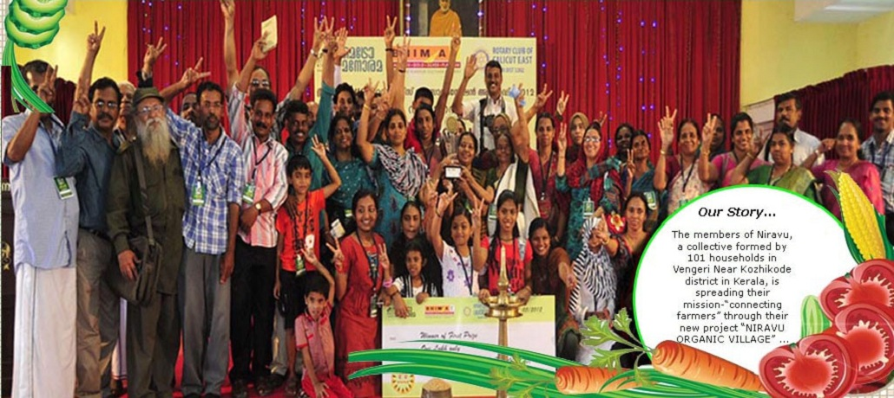

Gallery



A NGO for nature
It was in November 1, 2006 (Kerala formation day) that the Niravu Residents Association, Vengeri in Kozhikode City corporation decided to actively take to organic farming and ensure that every member household had a backyard vegetable garden for them. Niravu had as many as 101 residents then. When the forum came across a scarcity of good and indigenous vegetable seeds, its members decided to collect vegetable seeds from different parts of the State. NIRAVU was formed Inspired by the then Kerala Chief Minister V.S. Achyuthanandan’s exhortation on November 1, 2006 (Kerala Day) to social workers to take up at least one task each with dedication. We have constructed a one-kilometre-long new road linking Netaji Road and Janapriya Road, which spared the residents of a long detour in their daily travels. We are collective of hundred and one residents of the area at Calicut district, Kerala-India .